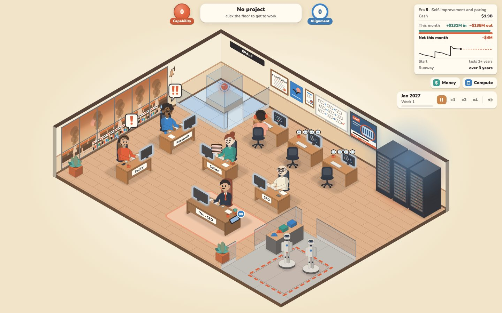

Research: docs/research/late-game/reports/Late game escalation and dominance.md on branch design/late-game. Every number in the mockups is illustrative, not from the sim.

Era length, the new system, the finale's shape and how many releases. Each direction names what it borrows and its weak point.
Nine regions, each shared out between the labs. Your models, government deals and sites push your colour into a region; rivals push back. At each checkpoint the map moves and the changed hexes ring. Compute and security stay world-wide, on the bar; alignment stays hidden.
These mix with any structure. Each direction above names its default.
Either works with any structure. No code may assume five eras either way.